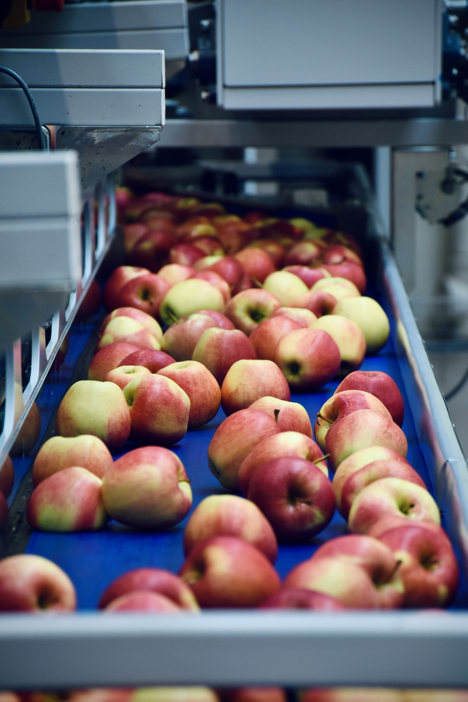

Industrie lourde & Énergie
Étalonnage des capteurs de pression, température et débit sur sites industriels et énergétiques.
De l'industrie lourde aux environnements cliniques, PROCAL adapte son expertise et ses process pour garantir précision, conformité et performance dans chaque contexte opérationnel.
Étalonnage des capteurs de pression, température et débit sur sites industriels et énergétiques.

Validation des détecteurs de métaux et contrôle des balances pour la sécurité alimentaire.
Étalonnage traçable des équipements critiques, conforme aux exigences BPF.
Vérification des balances, pipettes, étuves et enceintes climatiques d'analyse.

Contrôle et certification des dispositifs biomédicaux des cliniques et hôpitaux.

Contrôle des séparateurs magnétiques et des instruments de pesage sur sites miniers.
Maintenance et étalonnage sur site pour garantir la disponibilité de vos lignes.